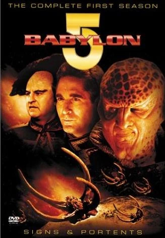
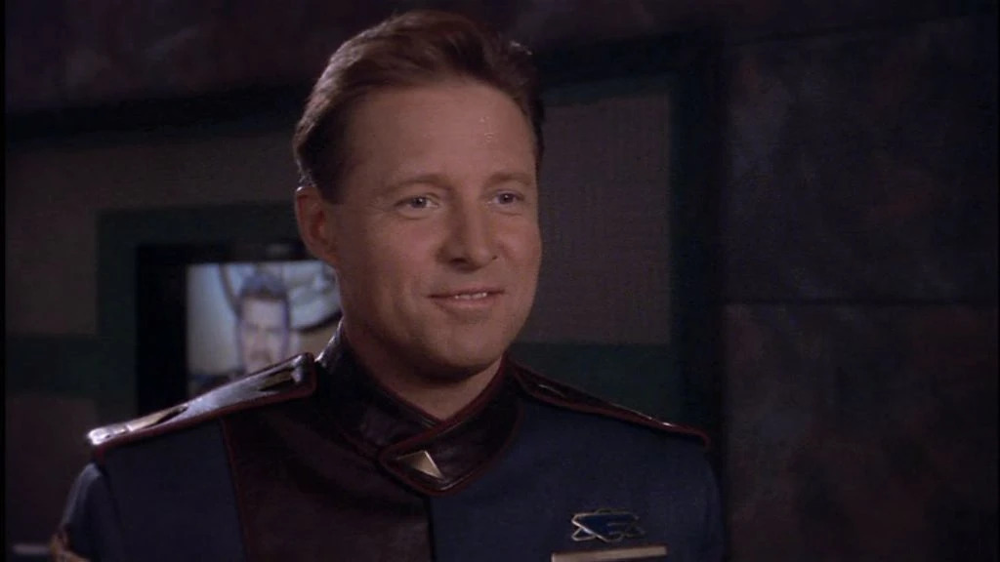
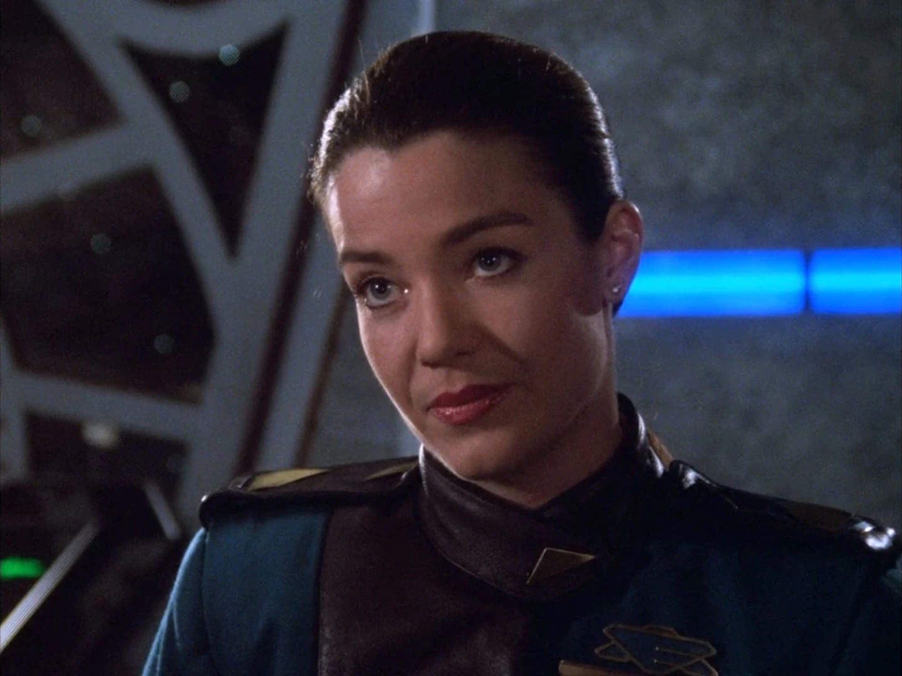
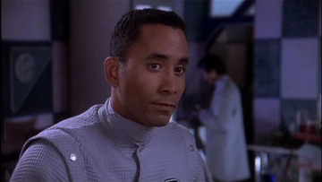

"Babylon 5" is this epic space saga set on a massive 5-mile-long space station. It's a wild mix of personal dramas and big-time space politics with a brewing war between the rival Centauri and Narn factions. Five years of adventures, conflicts, and galaxy-sized tensions!
CharactersJohn Sheridan Played by: Bruce Boxleitner Susan Ivanova  Played by: Claudia Christian Stephen Franklin  Played by: Richard Biggs |